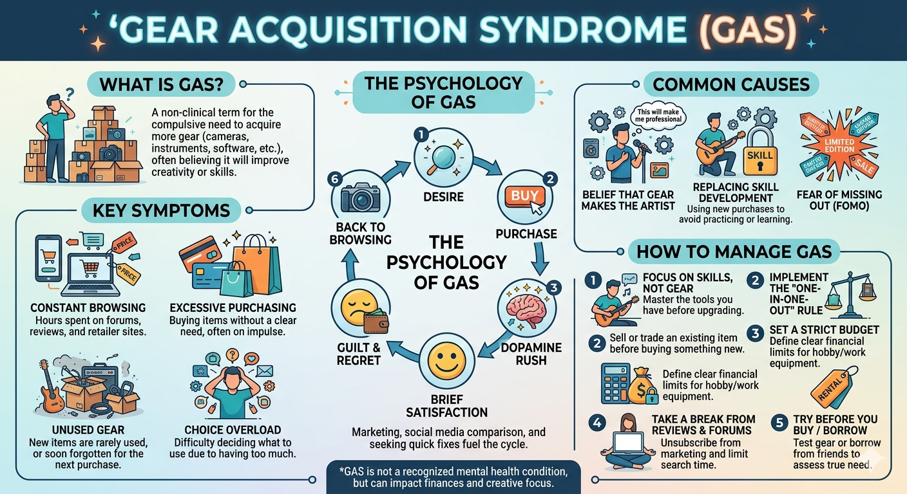

Installing Packages
!uv pip install networkx matplotlib torch torchvision --quietScott H. Hawley
May 13, 2026
I’ve been wanting to learn Causal Modeling (CM) / Causal Inference “properly” ever since I asked for Judea Pearl’s bestselling The Book of Why [1] for Christmas in 2019. It’s a great read, but it hides any actual computation by merely mentioning the mystical “do calculus”. Pearl offers details on that in his textbook [2] but I want get up to speed faster, so I’ve been reading and watching abbreviated treatments [3] [4] that quickly throw up what I call the “Wall of Math.”1
In this post, we’re going to catapult straight over that wall — starting immediately with code and calculation, introducing definitions and proofs only when we actually need them.
Causal modeling introductions invariably choose some medical intervention as an illustrative example. Since my specialty is teaching audio engineers [5], we’ll discuss the sad affliction known as Gear Acquisition Syndrome (GAS).
GAS is a debilitating condition affecting millions of musicians worldwide. It is the (false) cognitive bias in which the musician thinks that buying gear will make them more talented, and therefore result in better sound.2

While better gear can lead to better sound, we will explore using causal modeling whether gear actually has any impact on talent.
I have yet to encounter an intro to CM that lets me see any code before the time scale for proton decay. So get ready, we are launching the catapult – with us inside.
First we need to be able to define and take a look at the graphs that will comprise our causal models. We’ll set up the graph with Python (nodes, edges, directions) then push it to the viz routine so we can see it and move it around. I can’t articulate my intended applications, but based on my interests, I’m use a few libraries for this:
We won’t use CM-specific libraries like CausalML or EconML because I suspect they would likely hide and/or automate the bits I hope to learn to implement.
I will often hide the code via folds to preserve the narrative unless there’s some code that I really want you to see.
Let’s define a small graph or two with NetworkX:
import networkx as nx
import copy
# Gear Acquisition Syndrome
G = nx.DiGraph()
G.add_node("Talent", role="confounder")
G.add_node("Gear", role="treatment")
G.add_node("Sound", role="outcome")
G.add_edges_from([
("Gear", "Sound"),
("Talent", "Sound"),
("Talent", "Gear",),
])
# "Reality"
G2 = copy.deepcopy(G)
G2.remove_edge("Talent", "Gear")And then visualize with D3.js – try dragging the nodes around!
# Did I let Claude generate this code cell? ABSOLUTELY
import json, itertools
from IPython.display import HTML
ROLE_COLORS = {
"treatment": "#c0392b", # dark red
"outcome": "#1e8449", # dark green
"confounder": "#6c3483", # dark purple
"default": "#2471a3", # dark blue
}
_dag_counter = itertools.count()
def show_dag(G, width=600, height=300, node_size=34, font_size=13, title=""):
if not isinstance(G, list):
G, title = [G], [title]
elif not isinstance(title, list):
title = [title] * len(G)
specs = []
divs = []
for g, t in zip(G, title):
nodes = [{"id": str(n), "color": ROLE_COLORS.get(d.get("role"), ROLE_COLORS["default"])}
for n, d in g.nodes(data=True)]
links = [{"source": str(u), "target": str(v), "label": d.get("label", "")}
for u, v, d in g.edges(data=True)]
uid = f"dag{next(_dag_counter)}"
specs.append({"uid": uid, "nodes": nodes, "links": links,
"title": t, "titleOffset": 28 if t else 0})
divs.append(f'<div id="{uid}" style="width:{width}px;height:{height}px;'
f'border:1px solid #444;border-radius:6px;background:#1a1a2e;display:inline-block;"></div>')
specs_json = json.dumps(specs)
container = '<div style="display:flex;gap:12px;flex-wrap:wrap;">' + "".join(divs) + '</div>'
script = f"""
<script type="module">
import * as d3 from "https://cdn.jsdelivr.net/npm/d3@7/+esm";
function initGraphs() {{
const specs = {specs_json};
const W = {width}, H = {height}, R = {node_size}, FS = {font_size};
console.log("initGraphs: found", specs.length, "specs");
for (const spec of specs) {{
const {{uid, nodes, links, title, titleOffset}} = spec;
const el = document.getElementById(uid);
console.log("Looking for #" + uid + ":", el);
if (!el) continue;
const w = W, h = H, r = R, fs = FS;
const svg = d3.select(el).append("svg").attr("width", w).attr("height", h);
if (title) {{
svg.append("text").attr("x", w/2).attr("y", 30) // title placement
.attr("text-anchor", "middle").attr("fill", "#ccc")
.attr("font-size", "18px").attr("font-family", "sans-serif").attr("font-weight", "bold")
.text(title);
}}
svg.append("defs").append("marker")
.attr("id", uid + "-arrow").attr("viewBox", "0 -5 10 10")
.attr("refX", 10).attr("refY", 0).attr("markerWidth", 7).attr("markerHeight", 7).attr("orient", "auto")
.append("path").attr("d", "M0,-5L10,0L0,5").attr("fill", "#aaa");
const linkData = links.map(l => ({{...l}}));
const nodeData = nodes.map(n => ({{...n}}));
const sim = d3.forceSimulation(nodeData)
.force("link", d3.forceLink(linkData).id(d => d.id).distance(140))
.force("charge", d3.forceManyBody().strength(-500))
.force("center", d3.forceCenter(w/2, titleOffset/2 + h/2));
const link = svg.append("g").selectAll("line").data(linkData).join("line")
.attr("stroke", "#aaa").attr("stroke-width", 2)
.attr("marker-end", "url(#" + uid + "-arrow)");
const edgeLabels = svg.append("g").selectAll("text").data(linkData.filter(d => d.label)).join("text")
.attr("text-anchor", "middle").attr("fill", "#ffdd57")
.attr("font-size", "16px").attr("font-family", "sans-serif").attr("font-weight", "bold")
.text(d => d.label);
const node = svg.append("g").selectAll("g").data(nodeData).join("g")
.call(d3.drag()
.on("start", (e,d) => {{ if (!e.active) sim.alphaTarget(0.3).restart(); d.fx=d.x; d.fy=d.y; }})
.on("drag", (e,d) => {{ d.fx=e.x; d.fy=e.y; }})
.on("end", (e,d) => {{ if (!e.active) sim.alphaTarget(0); d.fx=null; d.fy=null; }}));
node.append("circle").attr("r", r).attr("fill", d => d.color).attr("stroke", "#fff").attr("stroke-width", 1.5);
node.each(function(d) {{
const lines = d.id.split("\\n");
const txt = d3.select(this).append("text").attr("text-anchor", "middle")
.attr("fill", "white").attr("font-size", fs+"px").attr("font-family", "sans-serif");
const lh = fs * 1.2, yStart = -((lines.length - 1) * lh) / 2;
lines.forEach((line, i) => {{
txt.append("tspan").attr("x", 0).attr("y", yStart + i*lh).attr("dy", "0.35em").text(line);
}});
}});
sim.on("tick", () => {{
link.each(function(d) {{
const dx = d.target.x-d.source.x, dy = d.target.y-d.source.y;
const dist = Math.sqrt(dx*dx+dy*dy) || 1, ux = dx/dist, uy = dy/dist;
d3.select(this)
.attr("x1", d.source.x+ux*r).attr("y1", d.source.y+uy*r)
.attr("x2", d.target.x-ux*r).attr("y2", d.target.y-uy*r);
}});
edgeLabels
.attr("x", d => (d.source.x+d.target.x)/2)
.attr("y", d => (d.source.y+d.target.y)/2 - 8);
node.attr("transform", d => `translate(${{d.x}},${{d.y}})`);
}});
}}
}}
setTimeout(initGraphs, 100);
</script>
"""
return HTML(container + script)
show_dag([G, G2], width=360, height=320, title=["Gear Acquisition Syndrome", "Reality"])
We’ll regard Sound as the “outcome”, the thing we measure via listening tests where listeners rate their preferences. We could imagine listeners submitting ranking scores and averaging them into a Mean Opinion Score (MOS), but for now it suffices to imagine (binary) A/B Testing for user preferences. Following CM conventions, we’ll denote the outcome as \(Y\) and use binary values:
We’re not going to be measuring Talent. Rather, we’re going to explore how allowing a causal link between Gear and Talent changes the expected statistics of Sound, and this will help us distinguish whether the GAS picture or the Reality picture best fits the data.
For our dataset, we’ll mix in some famous people and anonymous randos with various attributes…
import pandas as pd
df = pd.read_csv('player_data.csv')
COLORS = {
'Talent': {'High': '#4477AA', 'Low': '#CC6600'}, # blue / orange
'Gear': {'Fancy': '#AA3377', 'Cheap': '#CC9900'}, # purple / yellow
'Sound': {'Great': '#228833', 'Bad': '#BB4455'}, # green / red-pink
}
def style_col(val, col):
c = COLORS[col].get(val, '')
return f'background-color: {c}; color: #EEEEEE' if c else ''
(df.drop(columns=['Talent']).style
.applymap(style_col, subset=['Gear'], col='Gear')
.applymap(style_col, subset=['Sound'], col='Sound'))| Name | Gear | Sound | |
|---|---|---|---|
| 0 | Tom Scholz | Fancy | Great |
| 1 | Jeff Beck | Fancy | Bad |
| 2 | Prince | Fancy | Great |
| 3 | Jenny | Fancy | Great |
| 4 | Jay | Fancy | Great |
| 5 | Abe | Fancy | Bad |
| 6 | Paris Hilton | Fancy | Bad |
| 7 | Milli Vanilli | Fancy | Great |
| 8 | Phil Keaggy | Cheap | Great |
| 9 | Bob Dylan | Cheap | Bad |
| 10 | Todd | Cheap | Bad |
| 11 | Bubba | Cheap | Bad |
| 12 | Dale | Cheap | Great |
| 13 | Earnest | Cheap | Bad |
If we include the confounding effect of Talent:
| Name | Talent | Gear | Sound | |
|---|---|---|---|---|
| 0 | Tom Scholz | High | Fancy | Great |
| 1 | Jeff Beck | High | Fancy | Bad |
| 2 | Prince | High | Fancy | Great |
| 3 | Jenny | High | Fancy | Great |
| 4 | Jay | High | Fancy | Great |
| 5 | Abe | Low | Fancy | Bad |
| 6 | Paris Hilton | Low | Fancy | Bad |
| 7 | Milli Vanilli | Low | Fancy | Great |
| 8 | Phil Keaggy | High | Cheap | Great |
| 9 | Bob Dylan | High | Cheap | Bad |
| 10 | Todd | High | Cheap | Bad |
| 11 | Bubba | Low | Cheap | Bad |
| 12 | Dale | Low | Cheap | Great |
| 13 | Earnest | Low | Cheap | Bad |
In terms of causal inference., we want to compute the probability \(P({\rm Sound=Great} | \rm{do(Gear=Fancy}))\), i.e., will the sound will improve if we “intervene” by upgrading the gear?
To do that, we need to “marginalize” over Talent (i.e. do a weighted sum over all subsets):
\[\begin{align} P(\text{Sound=Great} \mid do(\text{Gear=Fancy})) &= P(\text{Sound=Great} \mid \text{Gear=Fancy, Talent=High}) \cdot P(\text{Talent=High}) \\ &+ P(\text{Sound=Great} \mid \text{Gear=Fancy, Talent=Low}) \cdot P(\text{Talent=Low}) \end{align}\] This is called the “adjustment formula”, specifically the “backdoor adjustment formula”.
That’s getting a little cumbersome, so let’s abbreviate our notation:
\[P(Y=1 \mid do(X=1)) = P(Y=1 \mid X=1, T=1) \cdot P(T=1) + P(Y=1 \mid X=1, T=0) \cdot P(T=0)\]
where \(X\) = Gear (1=Fancy), \(Y\) = Sound (1=Great), \(T\) = Talent (1=High). In code, that can look like:
# 1. Compute prior probabilities for Talent
p_talent_high = (df["Talent"] == "High").mean()
p_talent_low = (df["Talent"] == "Low").mean()
# 2. Compute conditional probabilities for Sound given Gear=Fancy and Talent
subset_high = df.query("Gear == 'Fancy' and Talent == 'High'")
subset_low = df.query("Gear == 'Fancy' and Talent == 'Low'")
p_sound_given_high = (subset_high["Sound"] == "Great").mean()
p_sound_given_low = (subset_low["Sound"] == "Great").mean()
# 3. Combine using your formula
p_do_gear_fancy = (p_sound_given_high * p_talent_high) + (p_sound_given_low * p_talent_low)
print("Answer =",p_do_gear_fancy) Answer = 0.6But we can compute this much more efficiently via “advanced” pandas methods. Let’s make a fast, general routine that we can use elsewhere:
def backdoor_adjustment(data, outcome_col, treatment_col, confounder_col, outcome_val, treatment_val):
"""
Computes P(Outcome = outcome_val | do(Treatment = treatment_val))
by adjusting for a single confounding variable.
"""
# 1. Calculate P(Confounder) for all categories
p_confounder = data[confounder_col].value_counts(normalize=True)
# 2. Filter data for the specific treatment strategy
treatment_subset = data[data[treatment_col] == treatment_val]
# 3. Calculate P(Outcome = outcome_val | Treatment, Confounder) for all categories
p_outcome_given_confounder = (
treatment_subset[outcome_col].eq(outcome_val)
.groupby(treatment_subset[confounder_col])
.mean() )
# 4. Align indices, multiply, and sum (the adjustment formula)
return (p_outcome_given_confounder * p_confounder).sum()
result = backdoor_adjustment(df, "Sound", "Gear", "Talent", "Great", "Fancy")
print("Answer =",result)Answer = 0.6Still writing! Come back for more later.
G3 = nx.DiGraph()
G3.add_node("Talent", role="default")
G3.add_node("Performance", role="confounder")
G3.add_node("Gear", role="default")
G3.add_node("Recording", role="confounder")
G3.add_node("Signal\nProc", role="treatment")
G3.add_node("Sound", role="outcome")
G3.add_edges_from([
("Talent", "Performance"),
("Performance", "Recording"),
("Gear", "Recording"),
("Recording", "Signal\nProc"),
("Signal\nProc", "Sound"),
])
show_dag(G3, width=800, height=600, title="Why does my recording sound like ass?")Specifically: a Slough of Despond that front-loads definitions and jargon before you can do anything useful. In physics education I call that the “Chapter 2 Math Dump”; in ML it’s the “Wall of Math”. For CM it’s not even equations, it’s seemingly-endless terminology that induces cognitive load while you’re anxiously wondering “But how can I calculate something?” These treatments also invariably claim to assume mere “basic familiarity with statistics” yet invoke laws I’ve never heard of. Seems “basic” is relative.↩︎
Other definitions of GAS – e.g., “buying more gear will help me make better music” – are isomorphic to the one we have adopted. Predatory companies like Sweetwater and Guitar Center capitalize on the pathetic delusions of desperate losers and our lust for shiny toys. /s↩︎